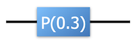

QC Simulators#
References#
“Quantum Computation and Quantum Information” by Nielsen and Chuang. The first two chapters provide a detailed and self-contained introduction and explanation of qubits and quantum gates.
Lecture notes for the course “Qubits, quantum mechanics, and computers” from Umesh Vazirani at Berkeley.
Lecture notes from John Preskill at Caltech.
Lecture notes from Ryan O’Donnell} and John Wright at CMU. First and second lectures cover basic quantum mechanics and quantum gates.
Wikipedia article on qubits.
Wikipedia article on quantum gates.
Gates#
In the previous section, we learned about how to represent a quantum state on a set of wires. In this section, we are going to learn about quantum gates and quantum circuits (which are composed of multiple quantum gates).
A quantum gate (or quantum circuit) transforms a quantum state to another quantum state.
We will build two different brands of simulators.
Our first simulator (Simulator S) will directly view gates as transforming quantum state to quantum states.
Our second simulator (Simulator M) will instead view gates (and circuits) as representing (unitary) matrices. These matrices will then multiply the state vector and convert it to another state vector.
Of course, these are two different ways of viewing the same thing (but will result in different simulators).
Both of our simulator brands are going to (primarily) use three different gates. Below each gate, we include some information about them for later reference - you’ll understand how this information is useful later.
The Hadamard Gate: H

The Phase Gate (which takes an angle \(\theta\)): P(\(\theta\))

The CNOT Gate which spans two wires: CNOT

This set of gates is universal. This means that any quantum circuit which can be implemented using any gates can also be implemented using this set of gates. (An equivalent statement is to say that any unitary matrix can be represented by a circuit made of these gates) In addition, there are no other set of (reasonable) gates which are significantly faster then this particular set of gates. Here reasonable means any set of one or two (or fixed k) qubit gates.
Circuits#
Gates are going to be combined together into a quantum circuit.
Here is an image of a quantum circuit.

A text description of that circuit can be represented in the following way:
3
H 1
H 2
P 2 0.3
CNOT 2 1
H 1
H 2
CNOT 2 0
This first line says that you have a circuit with 3 wires. The next lines tell you exactly what the circuit is doing. There is a Hadamard gate on wire 1 and 2, a phase gate on wire 2 with angle \(\theta=0.3\) radians, a CNOT gate between wires 2 and 1, then another two Hadamards and another CNOT. The fact that the CNOT says “2 0” means that the 2 is the control wire.
Convention
There is a convention about whether wire “0” (top wire) affects the most significant bit or the least significant bit. You should use the convention that it affects the most significant (leftmost) bit!
Input: By default the input of your quantum computing simulator will be \(|00..00\rangle\). Later on you will add a feature that lets you input another state (this will be useful for debugging). (Q: What is the vector which corresponds to the state \(|000\rangle\)?)
This particular circuit should output
Our goal now will be to write simulator(s) which take input states to output states. Later on, we will incorporate some additional tools to our simulators including measurement and arbitrary input.